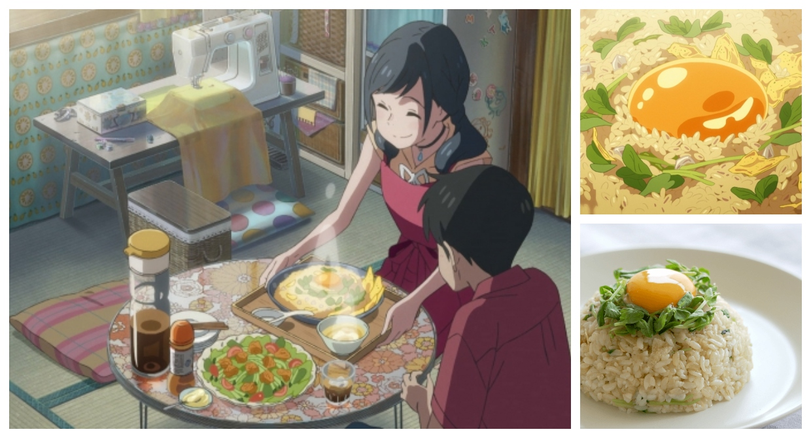

Potato Chip Fried Rice

Probably Don't Make this for Your Mother
If you have leftover chips and extra rice, here's something to try!
Ingredients
- 200 grams of Rice
- 16 grams of Potato Chips
- 1 Egg
- 1/4 Onion
- 1/4 pack of Sprouts
- 1 teaspoon Soy Sauce
- 1/2 teaspoon Chicken Stock Powder
- 1 teaspoon Grated Ginger
- 1 tablespoon Sesame Oil/li>
Steps
- Remove the stems from the sprouts. Finely chop the onions and the sprouts.
- Pour the sesame oil and ginger into a heated pan on low heat.
- Add in the onions and cook on medium until they are softened.
ill softened
- Add in the rice, half of the sprouts, soy sauce and chicken stock.
- After frying, mix in crushed potato chips and remove from heat.
- Cover a bowl in saram wrap and pour in the rice. Flip the bowl onto a plate to get a nice half-sphere shape.
- Separate egg yolk from egg whites. Create a dimple in the rice and top with egg yolk. Spread the remaining sprouts over the top of the dish and serve.